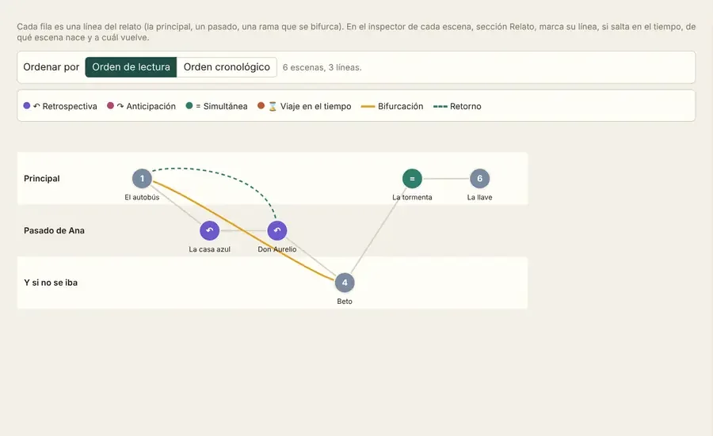

Ramas y variantes
Ramas ordena flashbacks, líneas paralelas, viajes en el tiempo y versiones alternativas de una escena.

Abre ramas, escenas retrospectivas y variantes ya armadas.
ExplorarQué indica cada campo
En el Inspector de cada escena, bloque Relato, o en el panel que aparece al pulsar una escena del gráfico, indicas:
- Línea del relato: el hilo al que pertenece, por ejemplo «Pasado de Ana», «1955» o «Universo B». Sin nombre queda en Principal.
- Cómo se cuenta esta escena: Sigue (ocurre después de la anterior), Retrospectiva (ocurrió antes de lo ya leído), Anticipación (ocurrirá después de lo ya leído), Simultánea (ocurre a la vez que otra escena) o Viaje en el tiempo. Bajo el selector aparece una línea que explica la opción elegida.
- A la vez que la escena: aparece solo con «Simultánea». Eliges con qué escena coincide y quedan en la misma columna del gráfico.
- Año o momento: un número, como 1985, que ubica la escena en el tiempo de la historia.
- Esta línea se separa de la escena: úsalo cuando una escena abre una rama nueva a partir de otra, como un universo alterno.
- Después regresa a la escena: úsalo cuando la historia vuelve a un punto ya contado, como un viaje de regreso.
Cómo leer el gráfico
En Relato, Ramas cada fila es una línea del relato, como una rama del árbol. Cada círculo es una escena con su número de lectura, su título y debajo su salto y su año. Una rama gruesa une las escenas de la misma línea.
- Una rama que se separa (línea amarilla con flecha) sale de la escena de origen y se abre hacia la línea nueva.
- Un regreso (línea verde punteada) vuelve a una escena ya contada. Si la escena está en la misma línea, se dibuja como un arco por encima de la línea. Si es un viaje en el tiempo, el trazo es rojo.
- Las escenas que ocurren a la vez en líneas distintas quedan en la misma columna, unidas por una barra verde punteada.
- El color del círculo dice el tipo de salto: ↶ retrospectiva, ↷ anticipación, = simultánea y ⌛ viaje en el tiempo.
Ordenar por lectura o por años
Con Orden de lectura las escenas siguen el orden del manuscrito. Con Por años se colocan sobre un eje de fechas: arriba aparece cada año y una guía vertical baja por toda la columna. Las escenas sin año toman el de la anterior. Así se ve de un vistazo qué ocurre al mismo tiempo en cada línea.
Las líneas
Bajo los botones de orden está la lista Líneas. Cada línea tiene su nombre editable: cámbialo y todas sus escenas se actualizan. Las flechas ▲ y ▼ cambian su orden en el gráfico. + Línea crea una línea vacía para ir armando el esquema antes de tener las escenas, y ✕ quita una línea vacía. Resaltar deja una sola línea con todo su color y atenúa las demás, útil cuando hay muchas.
Viaje en el tiempo
Dentro de «Ayuda, viaje en el tiempo y leyenda» eliges cómo funciona el viaje en tu historia. Hay cuatro formas habituales:
- Línea fija: lo que el viajero hace ya estaba incluido en la historia. No hay ramas. Cada viaje es un arco que vuelve a la misma línea.
- Línea que se reescribe: cambiar el pasado cambia el futuro de la única línea que existe.
- Ramas: cada cambio abre una línea nueva y la original sigue su curso.
- Bucle: el tiempo vuelve a empezar y la escena final regresa a la inicial.
Domingo te avisa si algo no encaja con la forma elegida, por ejemplo una rama en una línea fija.
Años a la línea de tiempo
El botón Años a la línea de tiempo crea, o actualiza, un evento por cada escena que tenga año. Con Mantener al día activado, cada vez que cambias un año en Ramas se actualiza también la línea de tiempo.
Exportar imagen
Exportar imagen guarda el gráfico como una imagen PNG con fondo blanco, lista para compartir o imprimir.
Armar un esquema paso a paso
- Crea una línea por cada época, universo o personaje con «+ Línea».
- Pulsa cada escena y elige su línea y su año.
- Si dos escenas ocurren a la vez, marca una como «Simultánea» y elige con cuál coincide.
- Cuando un personaje salta en el tiempo, marca la escena como «Viaje en el tiempo» y en «Después regresa a la escena» elige adónde llega.
- Pulsa «Por años» y mira cómo se ordena todo sobre el eje.
Variantes de una escena
Antes de reescribir una escena importante, pulsa Guardar el texto actual como variante y ponle nombre. Reescribe con libertad. Con Usar intercambias el texto de la escena por esa variante, y el que tenías se guarda solo como otra variante, así nunca pierdes nada. Las variantes no cuentan en el total de palabras ni se compilan. Para versiones de todo el libro, está el Historial de versiones.
Escribes el capítulo 3 como un recuerdo de hace diez años: lo pones en la línea «Pasado de Ana», como retrospectiva, momento 2014, que retorna a la escena 4. En Ramas, ves la curva del salto y el regreso.
Guarda como variante cualquier final que descartes. Se siente más fácil cortar cuando sabes que no lo estás perdiendo.